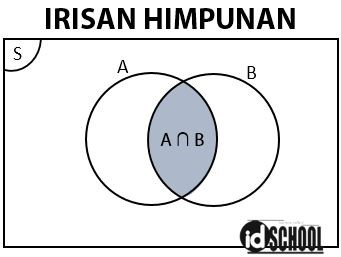
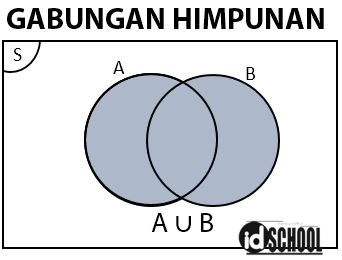
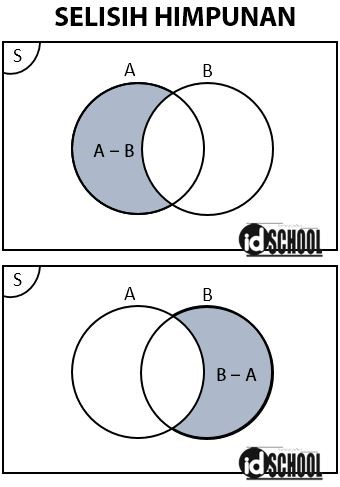
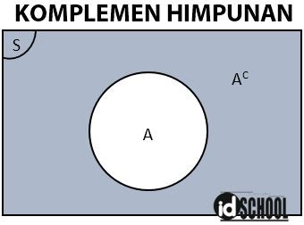
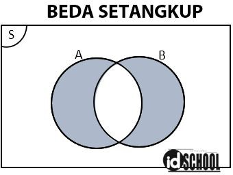

Pengertian Himpunan
Himpunan adalah kumpulan dari objek tertentu yang memiliki definisi yang jelas dan dianggap sebagai satu kesatuan.
Himpunan merupakan kumpulan objek-objek yang berbeda. Himpunan adalah kumpulan objek yang didefinisikan secara jelas dalam sembarang urutan. Himpunan adalah kumpulan dari objekobjek tertentu yang tercakup dalam satu kesatuan dengan keterangannya yang jelas.
Cara Menyatakan Himpunan
Secara umum, himpunan disimbolkan dengan huruf kapital dan jika anggota himpunan tersebut berupa huruf maka anggotanya dituliskan dengan huruf kecil. Terdapat beberapa cara penulisan himpunan, yaitu:
Dengan kata-kata (Enumerasi)
Yaitu dengan menyebutkan semua syarat ataupun sifat dari anggota himpunan tersebut di dalam kurung kurawal.
Contoh: A merupakan bilangan prima antara 10 dan 40.
Ditulis menjadi A = {bilangan asli antara 10 dan 40}
Keanggotaan
x € A : x merupakan anggota himpunan A;
x € A : x bukan merupakan anggota himpunan A.
Notasi: { x | syarat yang harus dipenuhi oleh x }
contoh
Misalkan: A = {1, 2, 3, 4}, R = { a, b, {a, b, c}, {a, c} }, dan K = {{}} maka 3 € A
{a, b, c} € Rc ∉ R
{} € K
{} ∉ R
Dengan notasi pembentuk (Simbol Baku)
Yaitu dengan menyebutkan semua sifat dari anggota himpunan tersebut, dengan anggotanya dinyatakan dalam suatu variabel dan dituliskan di dalam kurung kurawal.
Contoh: A merupakan bilangan prima antara 10 dan 40
Ditulis menjadi A= {x |10 < x < 40, x ϵ bilangan prima}
Notasi Pembentuk Bilangan Himpunan
Dinyatakan dengan menulis syarat yang harus dipenuhi anggotanya.
Aturan dalam penulisan syarat keanggotaan:
- Bagian di kiri tanda ‘|’ melambangkan elemen himpunan
- Tanda ‘|’ dibaca dimana atau sedemikian sehingga
- Bagian di kanan tanda ‘|’ menunjukan syarat keanggotaan himpunan
- Setiap tanda ‘,’ di dalam syarat keanggotaan dibaca dan
Diagram Venn
Diagram Venn menyajikan himpunan secara grafis. Didalam diagram Venn, himpunan semesta (U) digambarkan sebagai suatu segi empat sedangkan himpunan lainnya digambarkan sebagai lingkaran di dalam segi empat tersebut.
Konversi Oktal ke Biner
-
himpunan Kosong
- Suatu himpunan H disebut himpunan kosong jika n(H) = 0.
- Notasi untuk himpunan kosong adalah Ø atau { }
- Contoh himpunan kosong:
Himpunan nama-nama hewan berkaki tiga
Himpunan bilangan asli kurang dari satu
Himpunan bilangan prima genap antara 10 dan 20
-
Himpunan bagian
- Himpunan A disebut himpunan bagian (Subset) dari himpunan B jika setiap anggota A juga menjadi anggota B.
A Ì B ⟺ "xÎA ®xÎB.
- Himpunan bagian dari {a, d, t} adalah Ø, {a}, {d}, {t}, {a, d}, {a, t}, {d,t}, dan {a, d, t} → ada delapan himpunan bagian
- Himpunan bagian sejati dari {a, d, t} adalah Ø, {a}, {d}, {t}, {a, d}, {a, t}, {d,t}.
-
Himpunan semesta
Himpunan semesta S adalah himpunan yang memuat semua anggota himpunan yang dibicarakan.
Himpunan semesta dari {1,2,3,4,5} antara lain adalah:
- {0,1,2,3,4,5,6}
- {x|x bilangan asli}
- Himpunan bilangan cacah kurang dari 20.
Macam-Macam dan Contoh Himpunan
Himpunan terhingga dan himpunan tak hingga
Himpunan H disebut himpuan terhingga (finite set) jika n(H) = c, c bilangan cacah
Contoh:
G : Himpunan nama-nama hari dalam seminggu
N : {7,8,9,10, …, 2015}
Himpunan D disebut himpunan tak hingga (infinite set, transfinite set) jika n(D) = ~
Contoh:
F = {2, 3, 4, 5, …}
M : {xï2 £ x < 4, x bilangan real}
Himpunan terbilang dan himpunan tak terbilang
Himpunan terbilang, anggotanya dapat ditunjukkan satu per satu.
Contoh:
P = {4,5,6, …}
Q = {r, s, t, v, w, k, d, a}
R = {1, 2, 3, …, 138}.
Himpunan tak terbilang, anggotanya tidak dapat ditunjukkan satu per satu (kontinu).
Contoh:
D = {xï0 £ x < 7, x bilangan rasional}
F = {xïx £ 4, x bilangan real positip}.
Himpunan terbatas
Himpunan terbatas yaitu himpunan yang mempunyai batas. Ada himpunan terbatas kiri dan ada himpunan terbatas kanan.
Contoh:
K = {4, 1, 3, 8, 6}
L = {xï0 < x £ 7, x bilangan asli}
B = {xï0 < x £ 7, x bilangan bulat}.
Himpunan terbatas biasanya beranggotakan bilangan. Batas yang kecil disebut batas bawah, dan batas yang besar disebut batas atas.
Unsur yang menjadi batas itu tidak harus menjadi anggota himpunan. Pada himpunan terhingga yang ditulis secara tabulasi, yakni anggota terkecil menjadi batas bawah, dan anggota terbesar menjadi batas atas.
Khusus untuk bil real, himpunan tak terbilang (kontinu) bisa dinyatakan dengan interval atau selang:
- {x | 2< x £ 7} = (2,7]
- {x | 2 £ x < 7} = [2,7)
- {x | 2< x < 7} = (2,7)
Operasi pada Himpunan
Bentuk operasi pada himpunan dapat berupa irisan, gabungan, selisih, komplemen, beda setangkup, dan perkalian kartesian. Cara melakukan operasi pada himpunan dari setiap bentuk operasi dijelaskan melalui penjelasan-penjelasan di bawah.
-
Irisan Himpunan/Intersection ( ∩ )
Irisan dari dua himpunan A dan B adalah himpunan dengan anggota-anggota yang sama-sama terdapat pada dua himpunan tersebut. Atau dapat dikatakan bahwa himpunan irisan memuat semua anggota-anggota yang sama dari himpunan A dan himpunan B.
Simbol himpunan beririsan dinyatakan dalam notasi ∩, dibaca irisan. Notasi pembentuk himpunan untuk irisan dua himpunan A dan B dinyatakan dalam persamaan A ∩ B = {x | x ∈ A dan x ∈ B}.
Sebagai contoh terdapat himpunan A = {a, b, c, d, e} dan B = {a, i, u, e, o}. Perhatikan bahwa ada dua anggota himpunan yang sama-sama terletak pada himpunan A dan B yaitu a dan e. Sehingga, irisan himpunan A dan himpunan B adalah a dan e yang dituliskan dalam simbol dengan A ∩ B = {a, e}.

Contoh operasi pada himpunan yang mmerupakan irisan himpunan dapat dilihat seperti berikut.
-
A = {a, b, c, d, e}
B = {a, i, u, e, o}
A ∩ B = {a, e}
-
A = {1, 2, 3, 4, 5}
B = {2, 3, 5, 7, 11}
A ∩ B = {2, 3, 5}
-
Gabungan Himpunan/Union ( ∪ )
Operasi pada himpunan yang merupakan gabungan himpunan menyatakan operasi untuk menggabungkan anggota-anggota dari dua himpunan atau lebih menjadi sebuah himpunan baru. Anggota-anggota himpunan gabungan berasal dari semua anggota himpunan yang dioperasikan. Jika terdapat anggota himpunan yang sama cukup dituliskan satu kali.
Simbol untuk menyatakan gabungan himpunan adalah notasi ∪ (union) yang dibaca gabungan. Notasi pembentuk himpunan untuk gabungan dua himpunan A dan B dinyatakan dalam persamaan A ∪ B = {x|x ϵ A atau x ϵ B}.
Sebagai contoh, terdapat dua buah himpunan A dan B dengan A = {a, b, c, d, e} dan B = {a, i, u, e, o}. Operasi pada himpunan untuk gabungan kedua himpunan dilakukan dengan menggabungkan semua anggota-anggotanya. Sehingga hasil dari gabungan himpunan A dan himpunan B adalah {a, b, c, d, e, i, u, o} yang dapat dinotasikan dengan A ∪ B = {a, b, c, d, e, i, u, o}.

Contoh soal operasi gabungan himpunan diberikan seperti berikut.
-
A = {a, b, c, d, e}
B = {a, i, u, e, o}
A ∪ B = {a, b, c, d, e, g, k}
-
A = {1, 2, 3, 4, 5}
B = {2, 3, 5, 7, 11}
A ∪ B = {1, 2, 3, 4, 5, 7, 11}
-
Selisih Himpunan/Difference ( – )
Selisih dua himpunan meliputi semua anggota himpunan yang tidak dimiliki himpunan lain. Selisih antara dua buah himpunan dinotasikan oleh tanda kurang ( – ). Notasi pembangkit untuk selisih dua himpunan A dan B ditulis dalam persamaan A – B = {x|x ϵ A atau x ∉ B}.
Pada selisih himpunan A – B, himpunan barunya berupa semua anggota A yang tidak ada pada B. Sedangkan selisih himpunan B – A, himpunan baru yang dihasilkan sama dengan anggota himpunan B yang tidak ada pada A.
Sebagai contoh, diketahui dua buah himpunan A = {a, b, c, d, e} dan B = {a, i, u, e, o}. Selisih dua himpunan A – B = {b, c, d}, sementara selisih dua himpunan B – A = {i, u, o}.

Contoh operasi pada himpunan untuk selisih himpunan:
-
A = {a, b, c, d, e}
B = {a, i, u, e, o}
A – B = {b, c, d}
-
A = {a, b, c, d, e}
B = {a, i, u, e, o}
B – A = {i, u, o}
-
A = {1, 2, 3, 4, 5}
B = {2, 3, 5, 7, 11}
A – B = {1, 4}
-
Komplemen Himpunan ( AC )
Komplemen dari sebuah himpunan A adalah himpunan semua anggota himpunan semesta (S) yang tidak ada di himpunan A. Notasi komplemen suatu himpunan dinyatakan dalam pangkat C yang melekat pada himpunan terkait.
Himpunan semesta memuat semua anggota dari himpunan yang dibicarakan. Sebagai contoh, cakupan himpunan semesta untuk bilangan ganjil adalah semua bilangan ganjil yang tak berhingga. Untuk cakupan himpunan semesta untuk lima bilangan ganjil pertama memuat himpunan dengan anggota-anggota 1, 3, 5, 7, dan 9.
Sementara komplemen suatu himpunan merupakan himpunan dengan anggota yang bukan merupakan anggota himpunan semesta.
Untuk sebuah himpunan A maka komplemen dari himpunan A dinyatakan dalam notasi AC (dibaca A komplemen). Notasi pembangkit untuk menyatakan pernyataan suatu himpunan komplemen adalah AC = {x| x ∉ A, x ∈ S}.

Contoh soal komplemen dari suatu himpunan:
-
S = {1, 2, 3, 4, 5, 6, 7, 8, 9, 10}
A = {1, 3, 5, 7, 9}
AC = {2, 4, 6, 8, 10}
-
S = {bilangan ganjil kurang dari 20}
A= {1, 3, …, 9}
Ac = {11, 13, 15, 17, 19}
-
S = {1, 2, 3, 4, 5, 6, 7}
A = {1, 3, 5, 7}
Ac = {2,4,6}
-
Beda Setangkup (Symmetric Difference)
Operasi himpunan beda setangkup menghasilkan himpunan baru dengan anggota-anggota yang bukan merupakan irisan dari himpunan-himpunan yang dioperasikan. Pada operasi beda setangkup himpunan A dan B akan menghasilkan suatu himpunan yang anggotanya ada pada himpunan A atau B tetapi tidak pada keduanya.

Notasi operator beda setangkup dinyatakan dalam sebuah tanda plus dalam sebuah lingkaran, ⊕. Notasi pembangkit untuk beda setangkup adalah A ⊕ B = {x | x ∈ A tetapi x ∉ B dan x ∈ B tetapi x ∉ A}. Pernyataan tersebut sama dengan A ⊕ B = (A ∪ B) – (A ∩ B) atau sama dengan A ⊕ B = (A – B) ∪ (B – A).
Sebagai contoh diketahui dua buah himpunan A = {a, b, c, d, e} dan B = {a, i, u, e, o}. Anggota-anggota himpunan A dan B yang sama meliputi a dan e (irisan kedua himpunan). Hasil operasi beda setangkup merupakan anggota himpunan A atau B tetapi tidak keduanya.
Jadi, himpunan baru hasil operasi himpunan beda setangkup untuk himpunan A dan himpunan B adalah b, c, d, i, u, dan o yang dapat dinotasikan dengan A ⊕ B = {b, c, d, i, u, o}.
Contoh operasi himpunan beda setangkup:
-
A = {a, b, c, d, e}
B = {a, i, u, e, o}
A ⊕ B = {b, c, d, i, u, o}
-
A = {1, 2, 3, 4, 5}
B = {2, 3, 5, 7, 11}
A ⊕ B = {1, 4, 7, 11}
Operasi himpunan beda setangkup memenuhi hukum komutatif (A + B = B + A) dan asosiatif: (A + B) + C = A + (B + C).
-
Perkalian Kartesian (Cartesian Product)
Operasi pada himpunan untuk perkalian kartesian berupa pasangan berurutan. Misalnya pada perkalian kartesian dari himpunan A dan B, hasil himpunan barunya adalah semua pasangan berurut yang dibentuk dari anggota – angota himpunan A dan B. Simbol notasi perkalian kartesian himpunan A dan B dinyatana melalui A × B.
Sebagai contoh, diketahui dua buah himpunan A = {1, 2, 3} dan B ={a, b}. Himpunan hasil operasi perkalian kartesiannya adalah A × B = {(1, a), (1, b), (2, a), (2, b), (3, a), (3, b)}.
Notasi pembangkit untuk himpunan hasil operasi perkalian kartesian untuk himpunan A dan B adalah A × B = {(a, b) | a ∊ A dan b ∊ B}.
Contoh operasi himpunan untuk perkalian kartesian:
-
A = {1, 2, 3}
B = {7, 9}
A × B = {(1,7), (1,9), (2,7), (2,9), (3,7), (3,9)}
-
F = {bakso, soto, mie ayam}
D = {es teh, es jeruk, kopi}
F × D = {(bakso, es teh), (bakso, es jeruk), (bakso, kopi), (soto, es teh), (soto, es jeruk), (soto, kopi), (mie ayam, es teh), (mie ayam, es jeruk), (mie ayam, kopi)}
Pada operasi perkalian kartesian tidak berlaku A × B = B × A, karena anggota (a, b) tidak sama dengan (b, a).